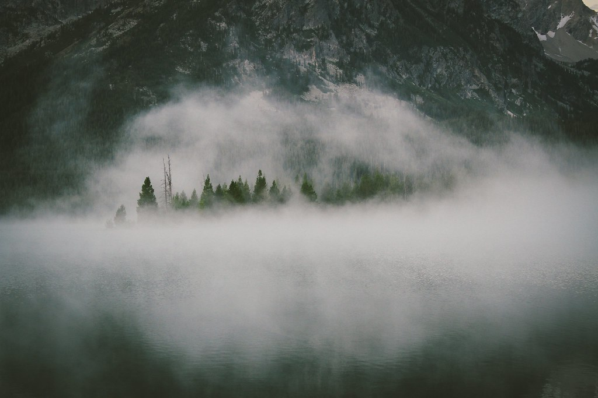
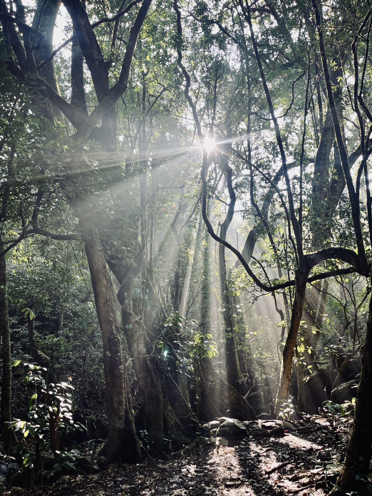
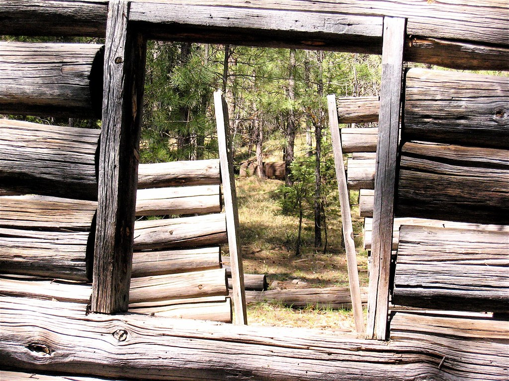
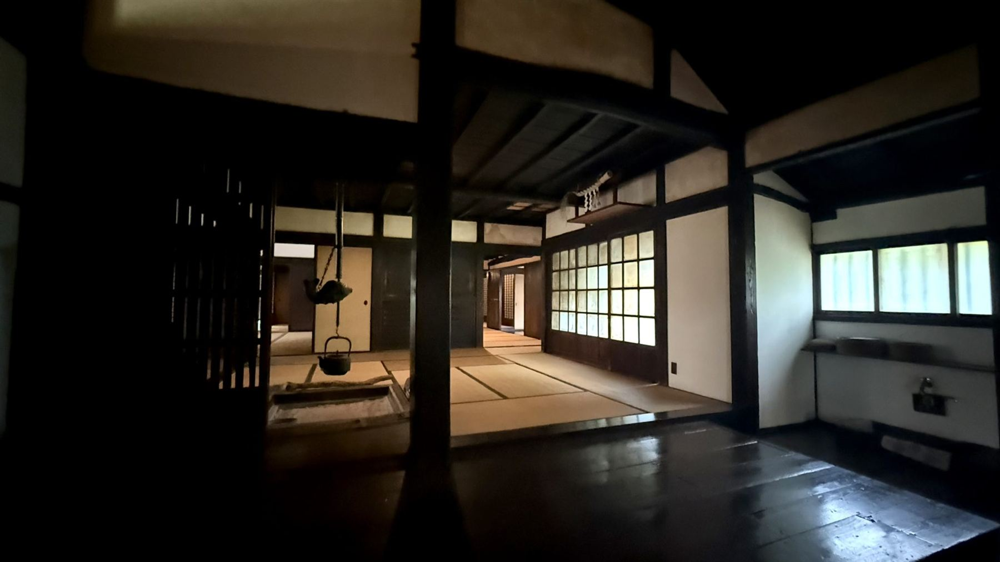
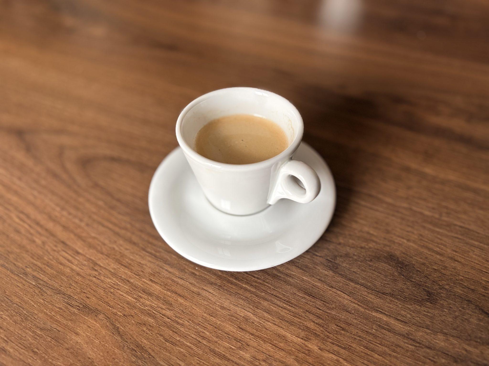
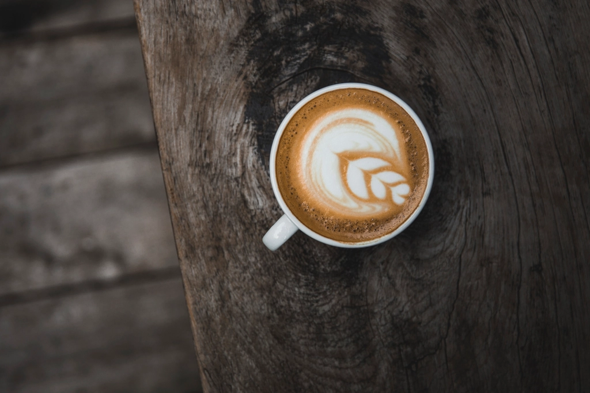
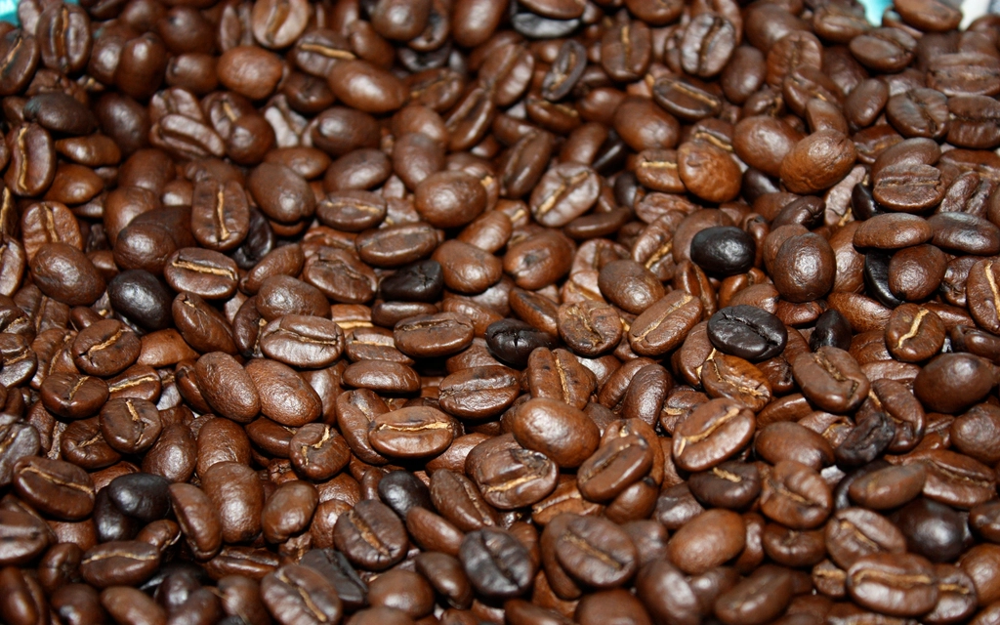
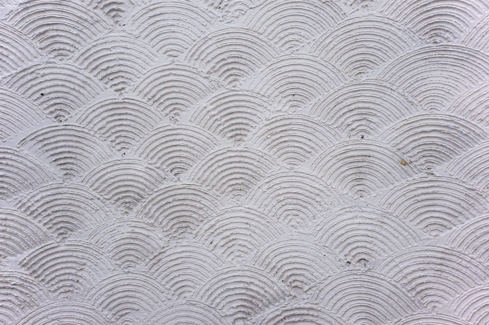
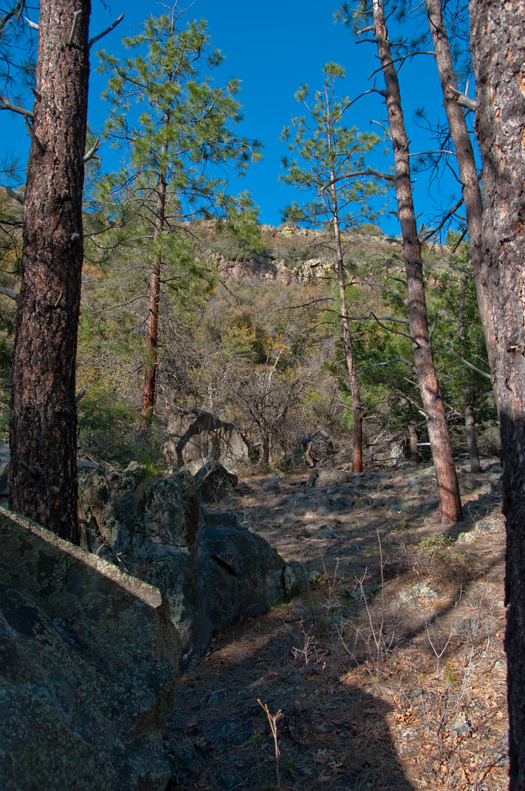

ギャラリー
山・緑・空間の雰囲気をイメージ写真でご紹介します。(写真はOpenverseのフリー素材を使用しています)










写真はフリー素材のイメージです。実際の店内の様子とは異なります。
写真クレジット(Openverse / CC0・PDM)
本サイトで使用している写真は、すべて Openverse(https://openverse.org/)にてライセンスが CC0 または Public Domain Mark であることを確認の上、使用しています。サイト内で使用している全素材の出典は以下の通りです。
| 使用箇所 | タイトル / 提供者 | ライセンス | 出典リンク |
|---|---|---|---|
| TOP ヒーロー背景 | pale shot misty forest path / rawpixel | CC0 | rawpixel.com |
| moksaについて / ロケーション | Inner Basin Trail / deborah.soltesz | CC0 | Flickr |
| TOP / 「moksaという名前」 | Inner Basin Trail / deborah.soltesz | CC0 | Flickr |
| TOP / 古民家の空気(座敷) | Japanese tatami mat room / rawpixel | CC0 | rawpixel.com |
| moksaについて / 窓から見える緑 | 森の天蓋(見上げ) / WordPress Photo Directory 提供 | CC0 | WordPress Photo Directory |
| TOP / 音楽が流れる静かな場所 | Kelsey Trail / deborah.soltesz | CC0 | Flickr |
| moksaについて / 座敷 | Japanese tatami mat room / rawpixel | CC0 | rawpixel.com |
| TOP / コーヒーへの案 | macro view glass cup containing / rawpixel | CC0 | rawpixel.com |
| コーヒー / 丁寧に淹れる | Close-up of espresso machine with two brown coffee cups / Chevanon Photography | CC0 | Wikimedia Commons |
| コーヒー / 豆を選ぶ | Red raw coffee bean basket / rawpixel | CC0 | rawpixel.com |
| コーヒー / 持ち帰って | Free fresh raw coffee beans / rawpixel | CC0 | rawpixel.com |
| コーヒー / 一杯が届く | Free latte art cup wooden / rawpixel | CC0 | rawpixel.com |
| コーヒー / カプチーノ | Soy Cappuccino / Ananda La Vita | PDM | Flickr |
| TOP / アクセスへの案内タイル | Newfound Gap Road, Great Smoky Mountains NP / pvarney3 | PDM | Flickr |
| ギャラリー / 霧に包まれた山の森 | mountains-forest-fog-mist / pixellaphoto | CC0 | Flickr |
| ギャラリー / 木漏れ日の森 | 森に差し込む光 / Midhun P | CC0 | WordPress Photo Directory |
| ギャラリー / 木の窓から見える緑 | 若葉のクローズアップ / Shaddam Hossain | CC0 | WordPress Photo Directory |
| ギャラリー / 古民家風の室内 | 古民家内観(江戸東京たてもの園) / Arata Takami | CC0 | WordPress Photo Directory |
| ギャラリー / エスプレッソ | Black coffee white simple is / rawpixel | CC0 | rawpixel.com |
| ギャラリー / カプチーノのフォーム | Today's Flat White / cogdogblog | CC0 | Flickr |
| ギャラリー / 生の珈琲豆 | Roasted coffee beans background / rawpixel | CC0 | rawpixel.com |
| ギャラリー / 木の質感 | Wood Material Background Wallpaper Texture Concept / Rawpixel Ltd | CC0 | Flickr |
| ギャラリー / 土壁の質感 | Clay wall texture / Nilo Velez | CC0 | WordPress Photo Directory |
| ギャラリー / 山道の小径 | Kelsey Trail / deborah.soltesz | CC0 | Flickr |
山あいの一軒へ、どうぞ。